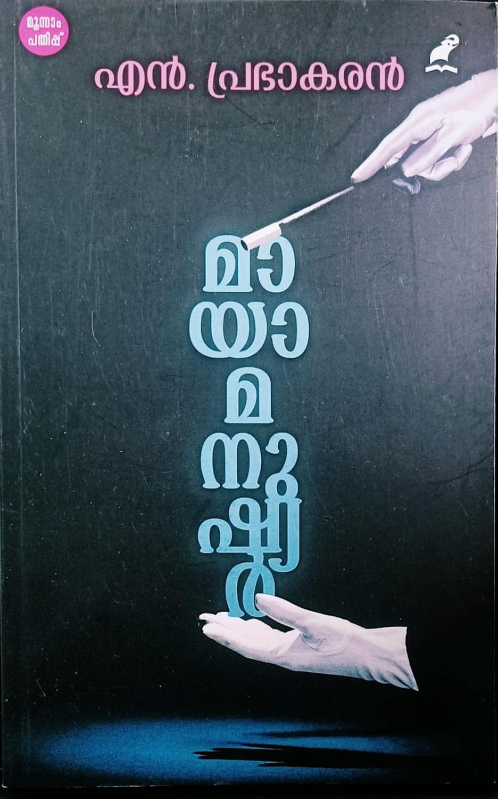

Author: എൻ. പ്രഭാകരൻ
Review by: സരോജിനി
എൻ. പ്രഭാകരൻ മാഷിൻ്റെ 'മായാ മനുഷ്യർ' വായിച്ചു. കുറച്ചേറെ ദൈർഘ്യമുള്ള ഒരു ചെറുകഥയായി എഴുതാൻ തുടങ്ങിയത് വലുതായി നോവൽ എന്ന ഗണത്തിലേക്ക് മാറുകയായിരുന്നു എന്ന് പുസ്തകത്തിൻ്റെ ആമുഖത്തിൽ മാഷ് സൂചിപ്പിക്കുന്നുണ്ട്.
മലയാളിക്ക് തീർത്തും അസാധാരണമായി തോന്നാവുന്ന ഒരു പേരാണ് കഥാനായകന് അദ്ദേഹം നൽകിയിരിക്കുന്നത്. ബിരുദാനന്തരബിരുദം നേടിയെങ്കിലും ജോലിക്കായുള്ള മത്സരപ്പരീക്ഷകളൊന്നും എഴുതാൻ ഗമൻ മിനക്കെടുന്നില്ല. 'സ്മൃതി വിരുന്ന്' എന്ന മാസികയുടെ ഓഫീസിൽ ജോലിക്കെത്തുന്നതോടെ ഗമൻ്റെ ദിവസങ്ങൾ തിരക്കുള്ളതാകുന്നു.
ജോലിയുമായി ബന്ധപ്പെട്ടും അല്ലാതെയും ഗമൻ പലയാളുകളെ പരിചയപ്പെടുന്നു. ഗൗതമൻ അവിനാശ്, ഫൽഗുനൻ എന്നിവർ അവരിൽ ചിലരാണ്. സമകാലിക രാഷ്ട്രീയവും മതവുമെല്ലാം നോവലിൽ വിഷയമാകുന്നുണ്ട്.
പലപ്പോഴും സ്വയം തീരുമാനമെടുക്കാൻ കഴിയാതെ മറ്റുള്ളവരുടെ തീരുമാനങ്ങൾക്ക് പിന്നാലെ പോകുന്ന ഗമനോട് വായനക്കാർക്ക് സഹതാപം തോന്നും. വഴിയോരത്തെ വീടിൻ്റെ ഗേറ്റിനു മുമ്പിൽ നിൽക്കുന്ന സ്ത്രീ വീട്ടിലേക്ക് ക്ഷണിച്ചപ്പോൾ വരും വരായ്ക ചിന്തിക്കാതെ പിന്നാലെ പോകുന്ന ഗമനെ കാണാം. അന്തമില്ലാത്ത ചിന്തകളുടെ പെരു വഴിയിലൂടെ നടക്കുന്ന ഗമനെ ആകർഷിച്ച ഒരു മജീഷ്യനെ നോവലിൽ കാണാം. അയാൾ തട്ടിപ്പുകാരനാണെന്നറിയാതെ ഗമൻ പെട്ടുപോയെങ്കിലും തലനാരിഴയ്ക്ക് രക്ഷപ്പെടുന്നു. എല്ലാക്കാലത്തും ഓരോരോ മിഥ്യാ സങ്കല്പങ്ങളും അനാവശ്യമായ ബൗദ്ധികാസക്തികളുമാണ് ഗമനെ നയിച്ചത്. കാലം ആവശ്യപ്പെടുന്ന അതിജീവനതന്ത്രം ഒരിക്കലും ഗമൻ പഠിച്ചില്ല. അതുതന്നെയാണ് അയാളെ പുറകിലേക്ക് പിടിച്ചു വലിക്കുന്നതും.